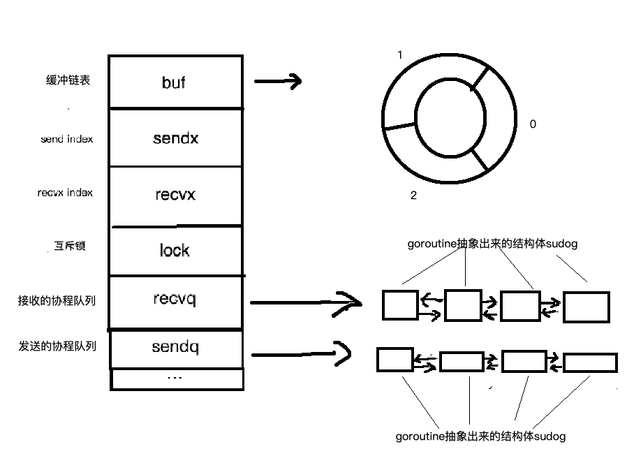
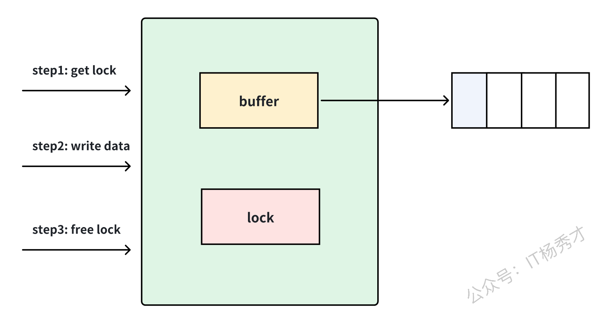
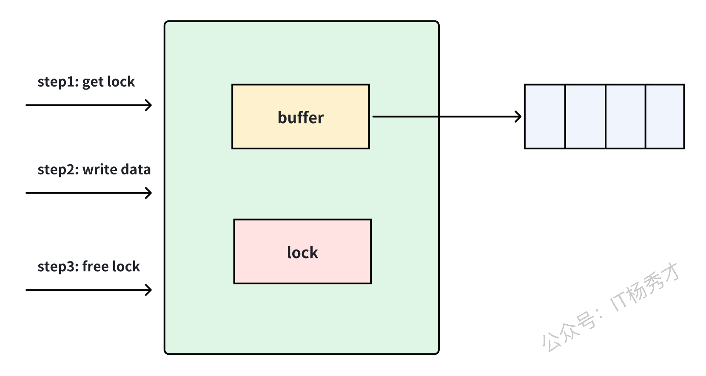

🧠 前言
我们知道可以通过 go 关键字来开启一个 goroutine，我们的样例代码逻辑很简单，都是在各个 goroutine 各自处理自己的逻辑，但有时候我们需要不同的 goroutine 之间能够通信，这里就要用到 Channel。
Go 语言中有个重要思想：不以共享内存来通信，而以通信来共享内存。说得更直接点，协程之间可以利用 Channel 来传递数据，实现goroutine之间的通信与同步。
📡 Channel是什么
官方定义：Channels are a typed conduit through which you can send and receive values with the channel operator.
Channel 是一个可以收发数据的管道，它是 Go 语言实现并发编程的核心组件之一。
🔍 Channel底层原理
Channel 在 Go 语言中是通过 hchan 结构体来实现的，了解其底层结构有助于我们更好地理解 Channel 的工作机制。

📦 hchan结构体
|
|
📋 关键字段说明
qcount：当前缓冲区中已有的元素数量dataqsiz：缓冲区的容量大小，无缓冲 Channel 该值为 0buf：指向环形缓冲区的指针，用于存储数据elemsize：每个元素的大小，用于内存拷贝closed：标识 Channel 是否已关闭，0 表示未关闭，1 表示已关闭elemtype：元素类型信息，用于类型检查和垃圾回收sendx/recvx：环形缓冲区的发送和接收索引recvq/sendq：等待队列，存储阻塞的 goroutinelock：互斥锁，保证并发安全
⚙️ Channel的实现位置
Channel 是纯粹的 用户态实现，这是 Go 能够实现高并发性能的重要原因之一。
✨ 用户态实现的优势
- 避免内核态切换：Channel 操作不涉及系统调用，避免了频繁的内核态-用户态切换
- 高效调度：通过 Go 调度器在用户空间高效地管理 Goroutine 的阻塞和唤醒
- 轻量级通信：比内核级通信（如管道、socket）轻量得多
- 缓冲区位置：Channel 的缓冲区分配在用户态的 Go 堆内存中，不依赖操作系统内核
🚀 性能意义
由于 Channel 完全由 Go 运行时（runtime）在用户态实现，使得并发编程既安全又高效，这是 Go 语言高并发能力的核心支撑之一。
🔧 Channel初始化
📝 声明方式
|
|
声明之后的管道，并没有进行初始化为其分配空间，其值是 nil，我们要使用还要配合 make 函数来对其初始化，之后才可以在程序中使用该管道。
🛠️ 初始化方式
|
|
🔄 Channel操作
Channel的操作主要有以下几种：
|
|
在这里需要注意 close(ch) 这个操作，管道用完了，需要对其进行关闭，避免程序一直在等待以及资源的浪费。但是关闭的管道，仍然可以从中接收数据，只是接收到的的数据永远是零值。
看下面例子：
|
|
运行结果：
|
|
创建一个缓存为 5 的 int 类型的管道，向管道里写入一个 1 之后，将管道关闭，然后开启一个 goroutine 从管道读取数据，读取 5 次，可以看到即便管道关闭之后，它仍然可以读取数据，在读完数据之后，将一直读取零值。
📖 Channel读取方式
🔍 判定读取
有时候我们需要往 Channel 里写入零值，然后用另一个 goroutine 读取，此时我们就无法区分两种情况（是否还有数据、是否已关闭）。这时候可以使用 ok 判断句式 来读取：
|
|
运行结果：
|
|
在读取 Channel 数据的时候，用 ok 做了判断，当管道内还有数据能读取的时候，ok 为 true，当管道关闭后，ok 为 false。
🔁 for range读取
在很多场景下，我们并不明确读取次数，只需要在 Channel 的一端读取数据，有数据就读，直到另一端关闭了这个 Channel，这时候可以使用 for range 这种优雅的方式来读取 Channel 中的数据：
|
|
运行结果：
|
|
主 goroutine 往 Channel 里写了两个数据 1 和 2，然后关闭，子 goroutine 也能读取到 1 和 2。这里在主 goroutine 关闭了 Channel 之后，子 goroutine 里的 for range 循环才会结束。
🔀 双向Channel和单向Channel
Channel 根据其功能又可以分为 双向 Channel 和 单向 Channel：
- 双向 Channel：即可发送数据又可接收数据
- 单向 Channel：要么只能发送数据，要么只能接收数据
📥 定义单向读Channel
|
|
📤 定义单向写Channel
|
|
注意：写 Channel 与读 Channel 在定义的时候只是 <- 的位置不同，前者在 chan 关键字后面，后者在 chan 关键字前面。
💻 代码示例
|
|
运行结果：
|
|
创建一个 Channel ch，分别定义两个单向 Channel 类型 SChannel 和 RChannel，根据别名类型给 ch 定义两个别名 send 和 rec，一个只用于发送，一个只用于读取。
⚖️ 有缓冲Channel与无缓冲Channel
Channel 又分为两类：有缓冲 Channel 和 无缓冲 Channel。为了协程安全，无论是有无缓冲的 Channel，内部都会有一把锁来控制并发访问，同时 Channel 底层有一个队列来存储数据。
🔒 无缓冲Channel
无缓冲 Channel 可以理解为 同步模式，即写入一个，如果没有消费者在消费，写入就会阻塞。
📦 有缓冲Channel
有缓冲 Channel 可以理解为 异步模式，即写入消息之后，即使还没被消费，只要队列没满，就可继续写入。

这里可能会问，如果有缓冲 Channel 队列满了，那不就退化到同步了么？是的，如果队列满了，发送还是会阻塞。

但是我们来反向思考下，如果有缓冲 Channel 长期都处于满队列情况，那何必用有缓冲。所以预期在正常情况下，有缓冲 Channel 都是异步交互的。
🔄 无缓冲Channel的状态转换
无缓冲 Channel 必须同时有读者和写者才能完成一次发送。没有配对方时，读写双方都会阻塞，并进入特定的 Goroutine 状态。
🚦 读写阻塞机制
- 写阻塞：当向无缓冲 Channel 发送数据时，如果没有接收者，发送 goroutine 会阻塞并加入
sendq等待队列 - 读阻塞：当从无缓冲 Channel 接收数据时，如果没有发送者，接收 goroutine 会阻塞并加入
recvq等待队列
🔄 状态转换过程
-
发送操作：
- 尝试发送数据时，检查
recvq是否有等待的接收者 - 如果有等待的接收者：直接将数据传递给接收者，双方都变为
runnable状态 - 如果没有等待的接收者：发送者进入
waiting状态，加入sendq队列
- 尝试发送数据时，检查
-
接收操作：
- 尝试接收数据时，检查
sendq是否有等待的发送者 - 如果有等待的发送者：直接从发送者获取数据，双方都变为
runnable状态 - 如果没有等待的发送者：接收者进入
waiting状态，加入recvq队列
- 尝试接收数据时，检查
🎯 关键特点
- 直接传递：无缓冲 Channel 的数据直接从发送者复制到接收者，不经过缓冲区
- 同步语义：读写双方必须同时就绪才能完成操作
- 状态管理：阻塞的 goroutine 从
running变为waiting，配对成功后变为runnable
🔒 Channel实现锁操作
前面分析了当缓冲队列满了以后，继续往 Channel 里面写数据，就会阻塞，那么利用这个特性，我们可以实现一个 goroutine 之间的锁。
|
|
运行结果：
|
|
ch <- true 和 <- ch 就相当于一个锁，将 *num = *num + 1 这个操作锁住了。因为 ch 管道的容量是 1，在每个 add 函数里都会往 Channel 放置一个 true，直到执行完 +1 操作之后才将 Channel 里的 true 取出。由于 Channel 的 size 是 1，所以当一个 goroutine 在执行 add 函数的时候，其他 goroutine 执行 add 函数，执行到 ch <- true 的时候就会阻塞，*num = *num + 1 不会成功，直到前一个 +1 操作完成，<-ch，读出了管道的元素，这样就实现了并发安全。
⚠️ Channel的死锁场景
Channel 产生死锁的典型场景是当所有 goroutine 都在等待 Channel 操作完成，而没有任何 goroutine 执行对应的发送或接收操作来解除阻塞。
💀 典型死锁示例
|
|
运行结果：
|
|
📋 常见死锁场景
-
无缓冲 Channel 单向阻塞：
- 主 goroutine 向无缓冲 Channel 发送数据，但没有其他 goroutine 接收
- 主 goroutine 从无缓冲 Channel 接收数据，但没有其他 goroutine 发送
-
循环等待：
1 2 3 4 5 6 7 8 9 10 11 12func main() { ch1 := make(chan int) ch2 := make(chan int) go func() { <-ch1 // 等待 ch1 的数据 ch2 <- 1 }() ch1 <- 1 // 主 goroutine 发送 <-ch2 // 主 goroutine 等待 ch2 } -
goroutine 泄漏导致的死锁：
- 启动的 goroutine 因为某些原因阻塞，导致预期的发送/接收操作无法完成
🛡️ 如何避免死锁
- 确保配对：确保每个发送操作都有对应的接收操作
- 使用缓冲：适当使用有缓冲 Channel 减少阻塞
- 超时机制：使用
select配合time.After设置超时 - 正确关闭：在合适的时机关闭 Channel，通知接收者结束等待
📊 Channel与协程通信示例
协程之间可以利用 Channel 来传递数据，如下的例子，可以看出父子协程如何通信的，父协程通过 Channel 拿到了子协程执行的结果：
|
|
运行结果：
|
|
🔀 select语句
select 语句是 Go 语言层面提供的一种 多路复用机制，用于检测当前 goroutine 连接的多个 Channel 是否有数据准备完毕，可用于读或写。它是 Go 语言中实现并发控制的核心机制，主要用于多路复用、非阻塞操作和超时控制。
📖 select是什么
select 可以同时监听多个 Channel 的读写操作，随机选择就绪的 Channel 进行处理，实现高效的并发通信和资源管理。其思想类似于 Linux 的 IO 多路复用模型，用一个或少量线程处理多个 IO 事件。
🔀 select与IO多路复用
看到 select，很自然会联想到 Linux 提供的 IO 多路复用模型：select、poll、epoll。Go 语言中的 select 与 Linux 中的 select 有一定区别，但核心思想相同。
🔄 传统阻塞IO
对于每一个网络 IO 事件，操作系统都会起一个线程去处理，在 IO 事件没准备好的时候，当前线程就会一直阻塞。
优缺点：
- 优点：逻辑简单，在阻塞等待期间线程会挂起，不会占用 CPU 资源
- 缺点：每个连接需要独立的线程单独处理，当并发请求量大时为了维护程序，内存、线程切换开销较大
⚡ IO多路复用
IO 多路复用通过复用一个线程处理多个 IO 事件，无需对额外过多的线程维护管理。
优缺点：
- 优点：资源和效率上都获得了提升
- 缺点：当连接数较少时效率相比多线程+阻塞 I/O 模型效率较低
Go 语言的 select 语句，是用来起一个 goroutine 监听多个 Channel 的读写事件，提高从多个 Channel 获取信息的效率，相当于也是单线程处理多个 IO 事件。
📝 基本语法
select 的用法形式类似于 switch，但区别在于 select 各个 case 的表达式必须都是 Channel 的读写操作：
|
|
select 通过多个 case 语句监听多个 Channel 的读写操作是否准备好可以执行，其中任何一个 case 可以执行了则选择该 case 语句执行，如果没有可以执行的 case，则执行 default 语句，如果没有 default，则当前 goroutine 会阻塞。
⭐ 核心特性
- 随机选择：
select会随机选择就绪的case，不能依赖执行顺序 - 避免饥饿：长时间运行的 goroutine 可能被其他 case “饿死”
- 资源管理：及时关闭不需要的 Channel，避免 goroutine 泄漏
- 错误处理：合理处理所有可能的 case，包括超时和取消
🎯 使用场景详解
🚫 空select永久阻塞
当一个 select 中什么语句都没有，没有任何 case，将会永久阻塞：
|
|
运行结果：
|
|
程序因为 select 语句导致永久阻塞，当前 goroutine 阻塞之后，由于 Go 语言自带死锁检测机制，发现当前 goroutine 永远不会被唤醒，会报上述死锁错误。
⚠️ 没有default且case无法执行的select
|
|
运行结果：
|
|
程序中 select 从两个 Channel ch1 和 ch2 中读取数据，但是两个 Channel 都没有数据，且没有 goroutine 往里面写数据，所以不可能读到数据，这两个 case 永远无法执行到，select 也没有 default，所以会出现永久阻塞，报死锁。
✅ 有单一case和default的select
|
|
运行结果：
|
|
执行到 select 语句的时候，由于 ch 中没有数据，且没有 goroutine 往 Channel 中写数据，所以 case 不可能执行到，就会执行 default 语句。
🎯 有多个case和default的select
|
|
运行结果：
|
|
主 goroutine 中先后往管道 ch1 和 ch2 中发送数据，在子 goroutine 中执行 select，可以看到，在执行 select 的时候，那个 case 准备好了就会执行当下 case 的语句，最后没有数据可接收了，没有 case 可以执行，则执行 default 语句。
🎲 select的随机性
重要：当多个 case 都准备好了的时候，会 随机选择一个执行。
|
|
运行结果（多次执行，2 个 case 都有可能打印）：
|
|
这就是 select 选择的随机性，不能依赖执行顺序。
⏱️ 超时控制示例
|
|
🚀 非阻塞操作
|
|
📊 性能特点
- 随机重排：每次触发
select时，底层会对所有case（对应 Channel）进行随机重排，且仅从"就绪状态"的 Channel 中选择 1 个case执行 - 自动筛选：重排前会排除未就绪（为空）的 Channel，仅在可用 Channel 中随机选 1 个
📝 小结
⚠️ 基本注意事项
- 关闭一个未初始化的
Channel会产生panic Channel只能被关闭一次，对同一个Channel重复关闭会产生panic- 向一个已关闭的
Channel发送消息会产生panic - 从一个已关闭的
Channel读取消息不会发生panic，会一直读取所有数据，直到零值 Channel可以读端和写端都有多个goroutine操作，在一端关闭Channel的时候，该Channel读端的所有goroutine都会收到Channel已关闭的消息Channel是 并发安全 的，多个goroutine同时读取Channel中的数据，不会产生并发安全问题
🔐 Channel的线程安全性详解
Channel 是线程安全的，是多 goroutine 并发安全的通信机制。它通过以下机制保证安全：
🔒 锁保护机制
Channel 的线程安全完全依赖于 hchan 结构体中的 lock（互斥锁），所有对 Channel 的核心操作（发送、接收、关闭）都会先加锁，操作完成后解锁：
- 发送操作（
ch <- data）：进入发送逻辑前先调用lock.Lock()，数据发送完成（或协程阻塞）后调用lock.Unlock() - 接收操作（
data <- ch）：进入接收逻辑前先调用lock.Lock()，数据接收完成（或协程阻塞）后调用lock.Unlock() - 关闭操作（
close(ch)）：关闭前先调用lock.Lock()，修改closed状态并通知等待协程后，调用lock.Unlock()
📋 等待队列保护
sendq队列：保证阻塞顺序和唤醒顺序安全recvq队列：存储等待接收的 goroutine，确保有序唤醒- 锁保护缓冲区和队列，防止多个写 goroutine 同时修改索引或缓冲区数据
🔗 Channel与Context
Context 是 Go 语言中用于传递请求范围数据、取消信号和截止时间的机制，它与 Channel 密切相关。
📋 Context的Done方法
|
|
Done() 方法：返回一个只读的 Channel，当 Context 被取消或超时时，该 Channel 会被关闭。这是 Context 取消机制的核心，goroutine 通过监听这个 Channel 来响应取消信号。
🔧 取消机制实现
Context 的取消机制基于 Channel 实现：
|
|
🔄 取消流程
当调用 cancel() 时：
- 会关闭当前 Context 的
doneChannel - 所有监听
<-ctx.Done()的 goroutine 都会立即返回 - 同时递归取消所有子 Context
- 从父 context 中解除注册，避免内存泄漏
⏰ 超时控制
|
|